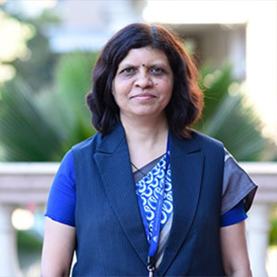
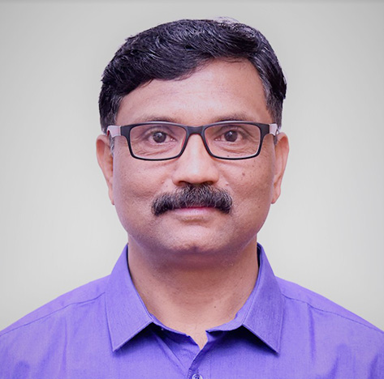
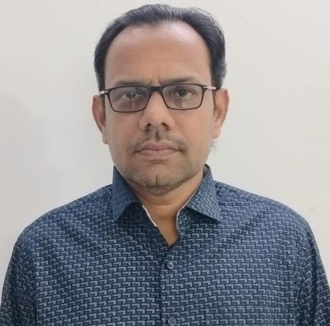
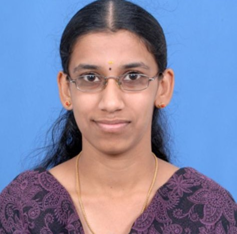
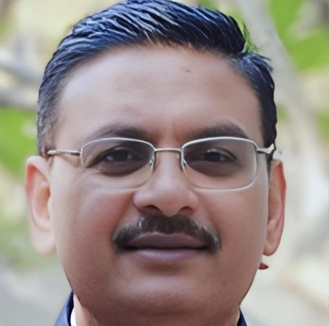
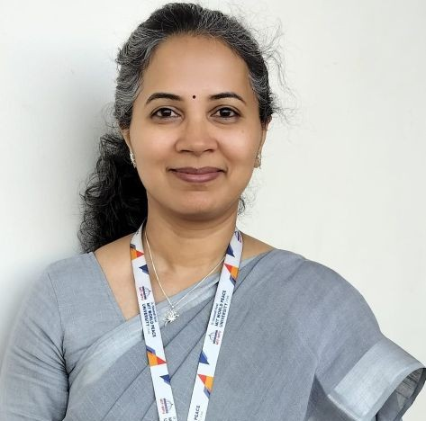
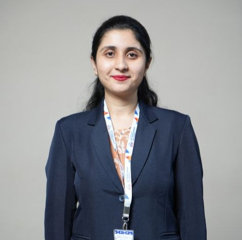
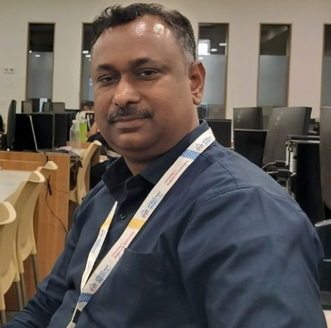
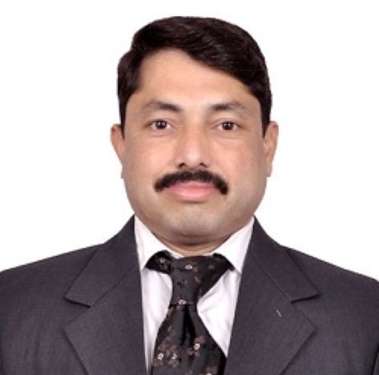
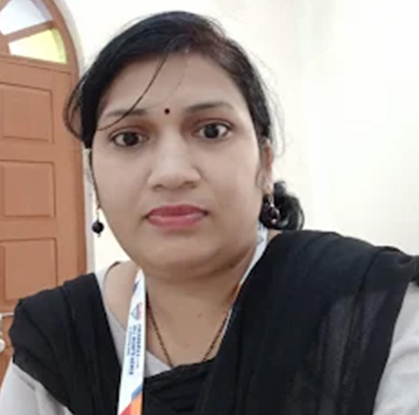

People

Dr. Anuradha Shantanu Kanade
Program Director & Associate Professor
Dr. Anuradha Kanade is the Program Director of the Department of Computer Science and Applications at Dr. Vishwanath Karad MIT World Peace University, Pune. She holds a Ph.D. from Savitribai Phule Pune University, an M.Phil., MCA, MBA…

Dr. Shankar Maruti Mali
Professor
Digital Image processing, Pattern Recognition, Natural language processing and Networking

Dr. Pravin Satyanarayan Metkewar
Professor
Dr. P. S. Metkewar has awarded with "Parbhani Ratna" award for his excellence in academics in 1996. He stood rank first in M.Sc. (computer science) in 1997. He has received his Ph.D. degree from SRT University, Nanded in computer science…
Dr. Sachin Bhimrao Bhoite
Associate Professor
Dr. Sachin B. Bhoite is an accomplished academician and researcher with over 25 years of experience in teaching and research. He serves as an Associate Professor and Ph.D. Coordinator at MIT-WPU University, Pune, and holds a SET…


Dr. Ashish Kulkarni
Associate Professor
Dr. Ashish A. Kulkarni is an achievement-driven professional and educator with 15 years of experience in IT and academia. Currently working as Associate Professor at MIT World Peace University Pune

Dr. Sachin Naik
Associate Professor
Dr. Sachin A. Naik has is an accomplished academic with over 25 years of teaching experience in computer science and Applications. Currently serving as an Associate Professor at MIT World Peace University, Pune, he holds a Ph.D. in…

Dr. Gopal Sakarkar
Associate Professor
Dr. Gopal Sakarkar successfully earned his Ph.D. in the field of Science and Technology( Computer Science and Engineering), in 2017. He also holds a Master's degree in Computer Applications (MCA) from S.G. B. Amravati University, Amravati,…
Dr. Deepali Dhananjay Shahane
Associate Professor
Agile Methodology, Software Engineering, Information Systems, Computer Management, Digital Transformation, Analytical Study

Dr. Basant Tiwari
Associate Professor
Dr. Basant Tiwari is currently an Associate Professor in the Department of Computer Science at Dr. Vishwanath Karad MIT World Peace University (MIT-WPU), Pune. He brings extensive experience in teaching undergraduate and postgraduate…

Dr. Pradeep Kumar Tiwari
Associate Professor
Dr. Pradeep Kumar Tiwari is an Associate Professor at Dr. Vishwanath Karad MIT World Peace University. He has previously worked at Birla Global University and Manipal University Jaipur as an Associate Professor and Assistant Professor. Dr.…

Dr. Barnali Banerjee
Assistant Professor
Dr. Barnali Banerjee is an accomplished academician and researcher with over 14 years of teaching and research experience. Her expertise lies in Machine Learning, Artificial Intelligence, and Data Science, with a strong interdisciplinary…

Dr. Ashok Shripati Deokar
Assistant Professor
Mr. Ashok S. Deokar has successfully completed his MCA and MBA from Savitribai Phule Pune University. He is presently pursuing his Ph.D. at the same university, specializing in Big Data and Digital Marketing. With over 22 years of teaching…


Prof. Kamakshi Goyal
Assistant Professor
Ms. Kamakshi Goyal is an Assistant Professor at Dr. Vishwanath Karad MIT World Peace University. She has previously worked at Chandmal Tarachand Bora College, Shirur, Pune, Maharashra and Nowrosjee Wadia College, Pune, Maharashtra as an…
Dr. Meenal Kaustubh Jabde
Assistant Professor
Dr. Meenal Kaustubh Jabde believes in creating an engaging, student-focused learning environment where conceptual understanding is complemented by practical knowledge. As an educator, her primary objective is to simplify complex ideas,…

Prof. Sudhanshu Jaiswal
Assistant Professor
Mr. Sudhanshu Jaiswal is an Assistant Professor in the Department of Computer Science & Applications under the School of Computer Science & Engineering. He holds a Master of Science in Blockchain Technology from MIT World Peace University,…
Prof. Ravikant Dnyaneshwar Kale
Assistant Professor
Prof. Ravikant Dnyaneshwar Kale (BCS, MCA, MPhil, (Pursuing PhD – SPPU)) is an Assistant Professor at MIT WPU, DoCSA. With over 18 years of teaching experience, he has delivered courses across various subjects for both undergraduate and…

Dr. Balagangadhar Reddy Kandula
Assistant Professor
An academic and researcher dedicated to bridging the gap between theoretical computer science and practical, large-scale industrial application. My teaching philosophy centers on "learning by building," where students engage with…

Prof. Rajesh Kanzade
Assistant Professor
Mr. Rajesh S. Kanzade is an Assistant Professor with over 25 years of extensive teaching experience in the field of Computer Science and Applications. Currently associated with MIT World Peace University, he is dedicated to fostering a…

Prof. Abhijeet Shrikrishna Kokare
Assistant Professor
Mr.Abhijeet Kokare received his M.Sc (Computer Science) from Modern College of Arts Science and Commerce, Savitribai Phule University Pune in the year 2009. He has also qualified the SET (Maharashtra) exam. He has 14 years of experience…
Dr. Vikas Jaywant Magar
Assistant Professor
Dr. Vikas J Magar received his M.Sc (Computer Science) and Ph.D. from the School of Computational Sciences, Solapur University Solapur in the years 2011 and 2020 respectively. He is also qualified NET(UGC) and SET (Maharashtra) exam. He…

Dr. Riddhi Gaurav Panchal
Assistant Professor
Dr. Riddhi Panchal holds an MPhil in Computer Science from Gujarat and a Ph.D. from Savitribai Phule Pune University. Currently serving as an Assistant Professor and Program Head for M.Sc. Data Science and Big Data Analytics in the School…
Dr. Sanjyotee Patil
Assistant Professor
Ms. Sanjyotee Patil is a dedicated faculty member with an interdisciplinary background in Electronic Science and Data Science & Artificial Intelligence. Currently pursuing a Ph.D. in Computer Science, she combines academic rigor with…
Prof. Sheetal Suresh Rajapurkar
Assistant Professor
Ms. Sheetal Rajapurkar has completed her M.Sc. Electronics from Shivaji University, Kolhapur and has qualified National Eligibility Test (UGC – NET) in December 2012. She is pursuing her Ph.D. from Shivaji University, Kolhapur. She has a…

Prof. Navnath Lahu Shete
Assistant Professor
Navnath Shete has completed his Masters in Computer Science from Savitribai Phule Pune University. He is having 22 years of teaching experience. He teaches subjects like Python, Machine Learning Algorithms, Design and Analysis of…

Dr. Anu Singha
Assistant Professor
Dr. Anu Singha is a seasoned academician and researcher, currently working as an Assistant Professor in the School of Computer Science & Engineering at Dr. Vishwanath Karad MIT World Peace University (MIT-WPU), Pune. Prior to this, he…
Dr. Deepali Sonawane
Assistant Professor
Deepali Sonawane is an Assistant Professor in the Department of Computer Science and Application, committed to fostering a learner-centric environment aligned with MIT-WPU’s vision of “Powering the Future.” Her teaching philosophy…
Dr. Archana Pradip Varade
Assistant Professor
Mrs. Archana Pradip Varade is committed to utilizing her academic knowledge and skills for the betterment of students and the institution, while continuously striving for excellence in teaching, learning, and professional growth. She…

Dr. Gauri Rahul Dhongade
Teaching Associate
Gauri Dhongade has completed her M.Sc. in Computer Science and has qualified the State Eligibility Test (SET). She is currently pursuing her Ph.D. in the field of Cybersecurity and Machine Learning. She has a total of 14 years of teaching…
Prof. Pooja Pradiprao Unhale
Teaching Associate
Mrs. Pooja Pradiprao Unhale is a dedicated and passionate educator committed to fostering a student-centric learning environment that promotes critical thinking, practical knowledge, and continuous growth. She believes in blending…